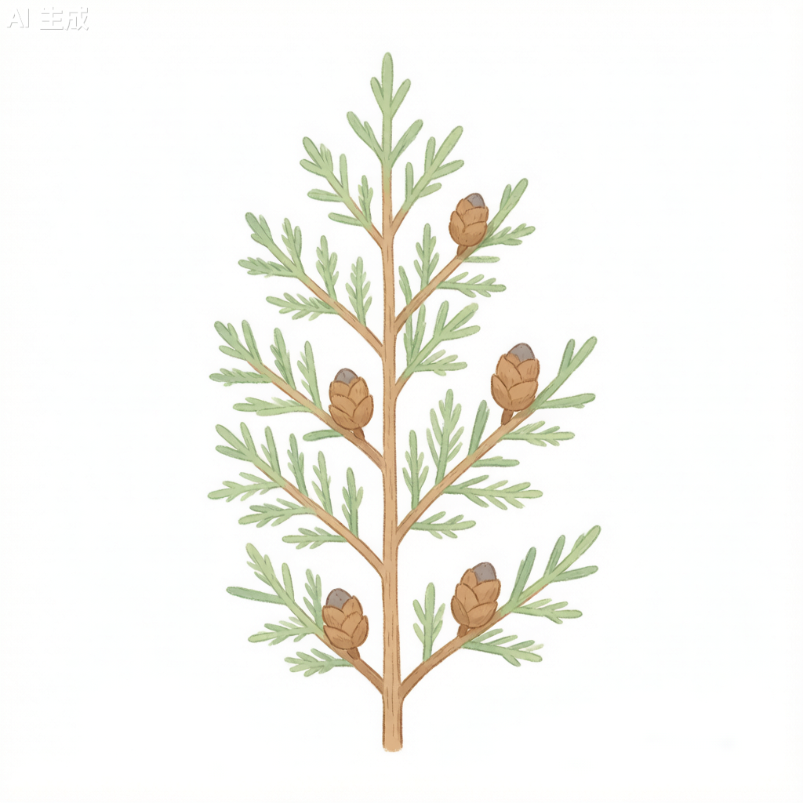

侧柏 Platycladus orientalis

形态特征
侧柏（Platycladus orientalis）为常绿乔木，高15–20米，有时呈灌木状。树皮薄，浅褐色，呈薄片状剥落。生鳞叶的小枝扁平，排成一平面，直展或斜展。鳞叶交互对生，长1–3毫米，先端微钝，背面有腺点。雌雄同株，球花单生于枝顶。雄球花黄色，卵圆形；雌球花蓝绿色，有4对交互对生的珠鳞。球果卵圆形，长1.5–2.5厘米，成熟前蓝绿色，被白粉，成熟后木质化，开裂，红褐色。种子卵圆形，无翅，长约4毫米。花期3–4月，球果翌年10月成熟。
分布与生境
侧柏为中国特有树种，分布极为广泛，北至黑龙江南部、内蒙古，南至广东、广西，西至甘肃、四川，东至沿海各省，是适应性最强的柏科植物之一。喜光，耐干旱、耐瘠薄，在干旱的石质山地和石灰岩山地均可生长，是北方石质山地造林的先锋树种。
分类学
侧柏为柏科（Cupressaceae）侧柏属（Platycladus）的唯一现存物种。"Platycladus"来源于希腊语"platys"（扁平）和"klados"（枝条），指其扁平的小枝特征。侧柏曾被归入崖柏属（Thuja，学名Thuja orientalis）和柏木属（Biota），但现代分类系统已将其独立为单型属。侧柏与崖柏的区别在于：侧柏球果卵圆形、鳞片厚而木质、无翅；崖柏球果长椭圆形、鳞片薄。
生态习性
侧柏为喜光树种，不耐阴，但在侧方庇荫下能正常生长。耐寒性强，可耐-35℃低温；耐旱性强，在年降水量300毫米的地区仍可生长；耐瘠薄，在土壤浅薄的石质山地也能存活。生长速度中等偏慢，但寿命极长，树龄可达千年以上。侧柏林是华北地区常见的天然次生林类型，具有重要的水土保持和生态修复功能。根系发达，能深入岩石缝隙吸收水分和养分。
利用与文化
侧柏在中国传统文化中占有重要地位。古人认为柏树可辟邪，常植于陵墓、庙宇前，尤以侧柏为最多。侧柏的木材材质细密，坚韧耐用，耐水湿，抗腐蚀，是制作棺木、桥梁、枕木和建筑的上等材料。侧柏叶和种子（柏子仁）均为传统中药，侧柏叶炒炭有凉血止血的功效，柏子仁养心安神。侧柏还是盆景艺术的重要素材，其苍劲古雅的姿态深受盆景爱好者喜爱。
参考文献
- 《中国植物志》第7卷: 322页. 科学出版社.
- 吴征镒. 1980. 中国植物区系的热带亲缘. 科学通报.
- 陈俊愉. 2001. 中国花卉品种分类学. 中国林业出版社.